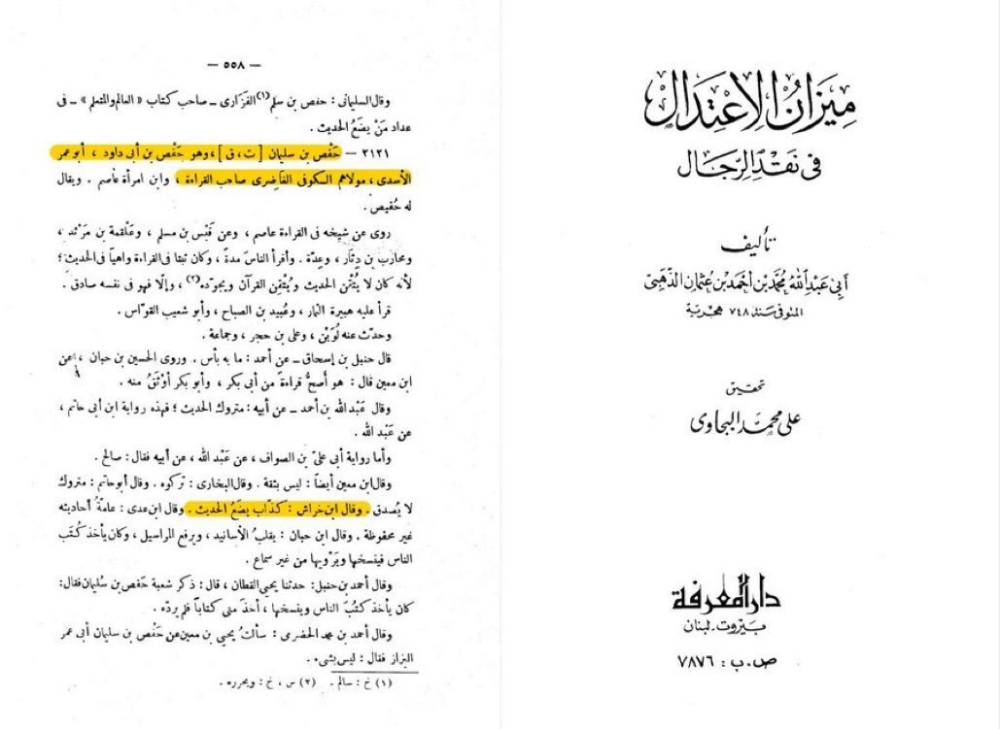

The Reliability Of Hafs Ibn Sulaymān al-Āsadi Abū ‘Omar al-Qārī رØمة الله تعالى عليه
‎❓| 𝗖𝗹𝗮𝗶𝗺𝘀:
‎1/ | 𝗪𝗮𝘀 𝗛𝗲 𝗟𝗮𝗯𝗲𝗹𝗹𝗲𝗱 𝗔 𝗟𝗶𝗮𝗿?
‎2/ | 𝗗𝗶𝗱 𝗛𝗲 𝗦𝘁𝗲𝗮𝗹 𝗕𝗼𝗼𝗸𝘀?
‎3/ | 𝗗𝗶𝗱 𝗛𝗲 𝗡𝗮𝗿𝗿𝗮𝘁𝗲 ğ— ğ—®ğ—»ğ—®ğ—¸Ä«ğ—¿?
1/
Ibn Khirāsh calls Hafs a liar, but who is this man? Is he even a Muslim scholar? Does he have any knowledge? Let’s see..

Imām al-Dhahabī mentions in Siyār ʿĀlam al-Nubala’ that scholars like Abū Zur’āh said Ibn Khirāsh was a Rāfidi, others mentioned he would get a Mursal narration and he would make it connected (lie or fabricate to make it connected) and he would get something Mawquf (from a companion) and make it Marfu' (from the Prophet).
Scholars also mentioned he was upon misguidance which is obvious as he was a Rāfidi, and had no knowledge. Is this the man these Kuffār are quoting to prove Hafs was a liar? Quoting a liar and a heretic with no knowledge claiming Hafs was a liar? Pretty ironic eh? Well, let’s get on to the next proof they have.
The kuffār quote a report where apparently, Yahyā Ibn Ma’īn calls Hafs Ibn Sulaymān a liar.. The issue is this report contains a unknown man, let’s get into the details..
The issue with this report is, we don’t know who Muhammad al-Baghdadi is, we don’t know his case or anything regarding this individual, we have no information about him therefore we have a unknown narrator in the chain.
Not even that, but the historian of Baghdad, Khateeb al-Baghdadi doesn’t even know who he is, and he wrote a 8+ volume on the history of Baghdad, therefore we can’t accept this.
And here, as we see, it’s a known factor that there’s no acceptance of reports with unknown individual.
2/
Next claim is Hafs Ibn Sulaymān al-Āsadi stole books, let’s see if it’s actually him or someone else..
The Claim that he stole books is false because the name of the man who stole the books was Hafs Ibn Sulaymān al-Minqari And not Hafs Ibn Sulaymān al-‘Āsadi Abū ‘Omar. Rookie mistake from the Kuffār mixing two different people up.
In Mizān al-I'tidāl, Imām al-Dhahabī mentions Hafs Ibn Sulaymān al-‘Āsadi and he’s from among the the reciters, this is a completely different name and description of the two named Hafs.
And here, Ibn Hajar al-ʿAsqalānī mentions the same as Imām al-Dhahabī, Hafs Ibn Sulaymān al-‘Āsadi is the reciter, [and not the other.]
3/
The last and worst claim is he narrated abandoned/Odd [Munkar] narrations. This doesn’t nullify is trustworthiness, as no scholar has said this, rather this is a lie and a innovation from the kuffār to “refute” Islām.
 And to end this, Here in Siyar A'lam al-Nubala by al-Dhahabi RH, he mentions that Hafs RH was Thabt (precise/trustworthy/good) in the Qira'ah of the Qur'an.
And to end this, Here in Siyar A'lam al-Nubala by al-Dhahabi RH, he mentions that Hafs RH was Thabt (precise/trustworthy/good) in the Qira'ah of the Qur'an.